FEBS-Vue为FEBS-Shiro的前后端分离版本，前端使用Vue全家桶，组件库采用Ant-Design-Vue。
文档里介绍的示例是在Windows10操作系统下完成的，后端编辑器使用IDEA，前端编辑器使用WebStorm。
项目导入
为了方便，我直接在桌面上通过git bash克隆项目：
1 | git clone https://github.com/wuyouzhuguli/FEBS-Vue.git |
克隆后，桌面上多出一个FEBS-Vue文件夹：
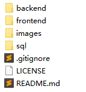
backend为后端项目源码，frontend为前端项目源码，sql为数据库初始化脚本。
JDK
因为项目用到了JDK 8的一些特性，所以JDK最低版本不能低于8。
JDK 8官方下载地址：https://www.oracle.com/technetwork/java/javase/downloads。
安装Node.js
Node.js下载地址：http://nodejs.cn/download/，直接安装即可，安装后查看其版本：
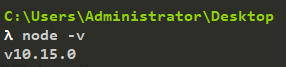
Node.js集成了npm，所以安装好Node.js后npm就可以使用了：
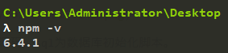
安装yarn
在CMD中执行npm install -g yarn：
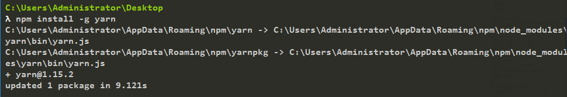
因为我之前已经安装过了，所以这里就相当于更新操作了。
安装Redis
项目缓存数据库使用的是Redis，所以在导入项目前需先安装Redis。
Redis Windows版本下载地址：https://github.com/MicrosoftArchive/redis/releases。直接下载zip版本解压到任意目录即可。
下载后，使用cmd命令切换到Redis根目录，然后运行redis-server.exe redis.windows.conf启动即可：
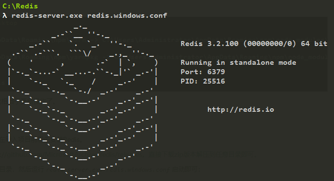
安装MySQL
项目数据库采用MySQL社区版，版本为5.7.x。
下载地址：https://dev.mysql.com/downloads/windows/installer/5.7.html
导入SQL
使用Navicat新建一个数据库：
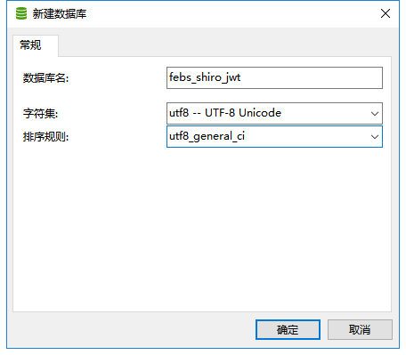
然后导入SQL脚本即可。
导入后端项目
IDEA选择backend： 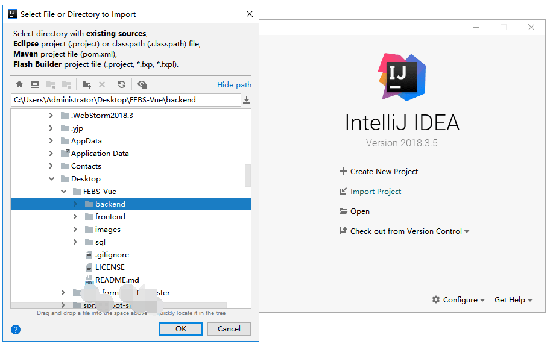
导入项目后安装lombok插件（不懂lombok可以自行百度）：
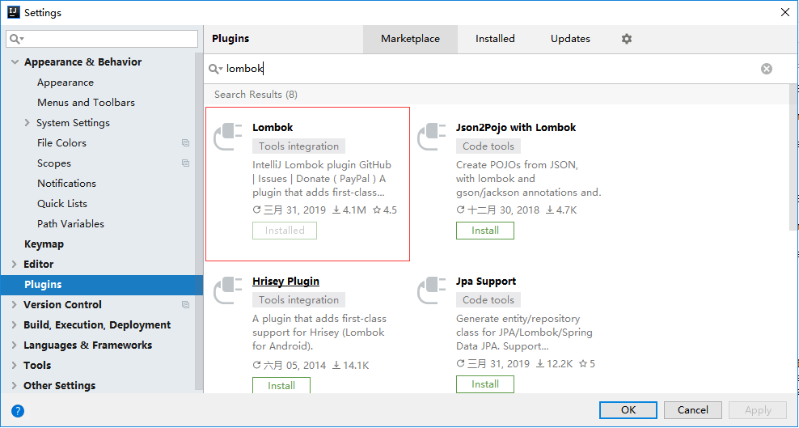
安装完重启IDEA才能生效。
接着修改application.yml中的数据库和Redis配置，修改完后通过Spring Boot入口类FebsApplication启动即可：
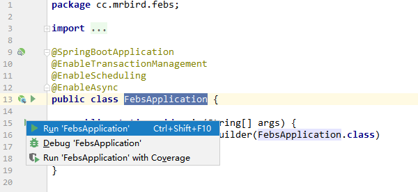
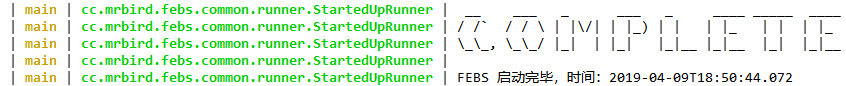
接着开始导入前端项目。
导入前端项目
使用WebStorm打开frontend：
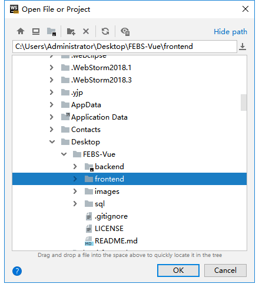
在终端输入yarn install命令安装依赖：
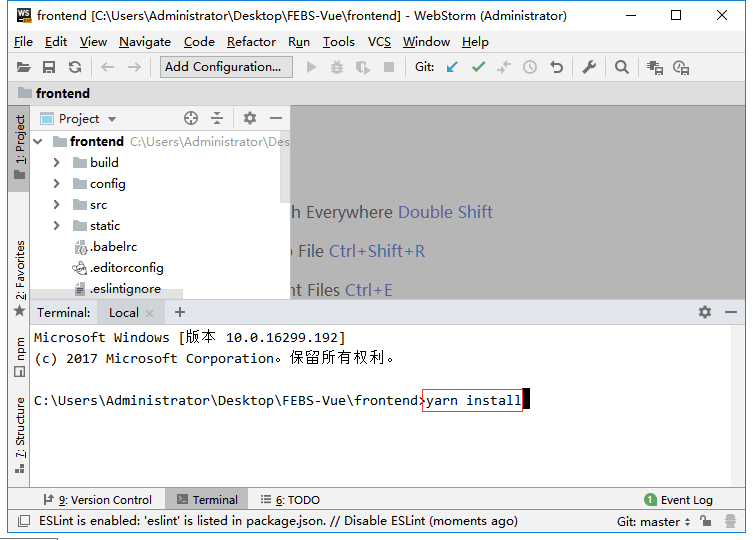
稍等片刻，坐与放宽。
依赖下载完毕后，输入yarn start启动前端项目：
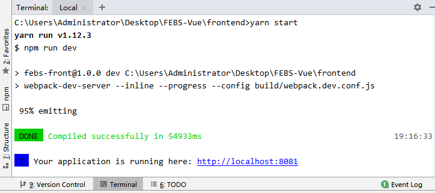
浏览器访问http://localhost:8081：
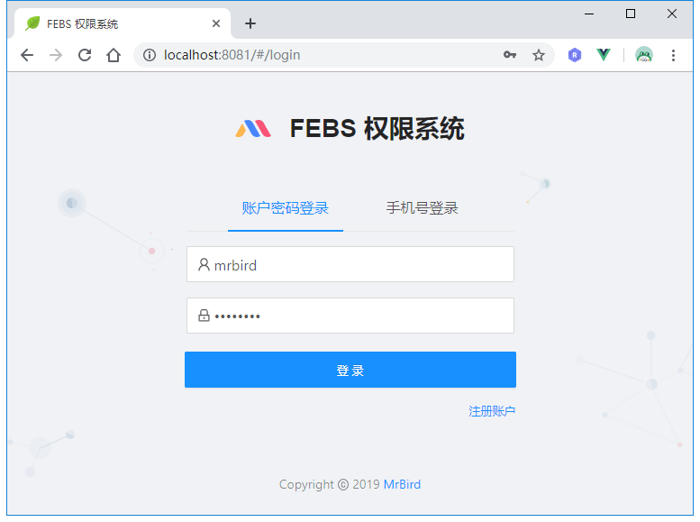
项目部署
下面演示如何在Linux上部署项目（例子采用CentOS7）。
Vagrant创建CentOS
如果没有CentOS7环境可以使用Vagrant快速构建一个CentOS虚拟机，具体可以参考：https://mrbird.cc/Create-Virtual-Machine-By-Vagrant.html。我的CentOS虚拟机IP为：192.168.33.11。
使用命令timedatectl set-timezone Asia/Shanghai设置CentOS的时区，以避免因时区带来的BUG。
Java环境配置
- 下载JDK8：
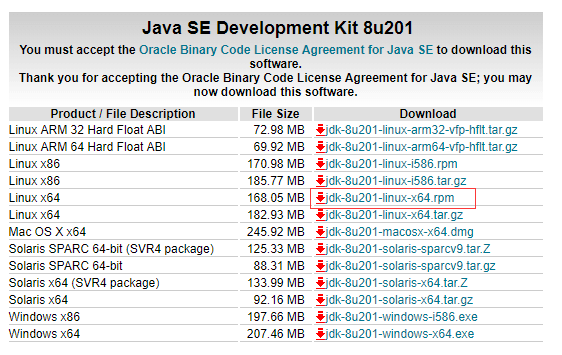
下载后通过Vagrant共享到CentOS上（我的Vagrantfile共享配置为config.vm.synced_folder "./sync", "/vagrant", create:true, owner: "root", group: "root"）：
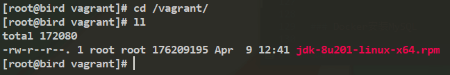
- 安装JDK8：
1 | rpm -ivh jdk-8u201-linux-x64.rpm |
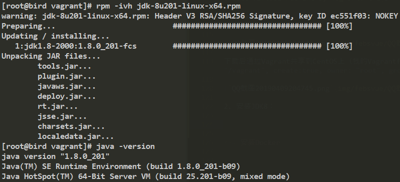
- 配置环境变量
1 | vim /etc/profile |
输入以下内容：
1 | JAVA_HOME=/usr/java/jdk1.8.0_201 |
然后执行以下命令生效：
1 | source /etc/profile |
安装Docker
官方安装教程：https://docs.docker.com/install/linux/docker-ce/centos/
安装好后：
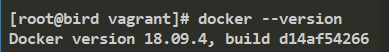
Docker安装MySQL
- 拉取MySQL镜像：

- 创建目录/home/febs/mysql，用于挂载MySQL volume:
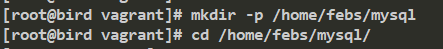
- 创建MySQL容器：
1 | docker run -d --name mysql -p 3306:3306 \ |

- 使用Navicat连接MySQL，创建数据库并导入数据：
连接：
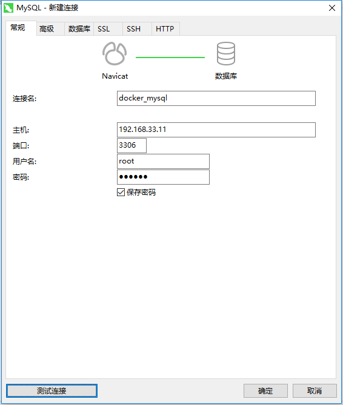
新增数据库：
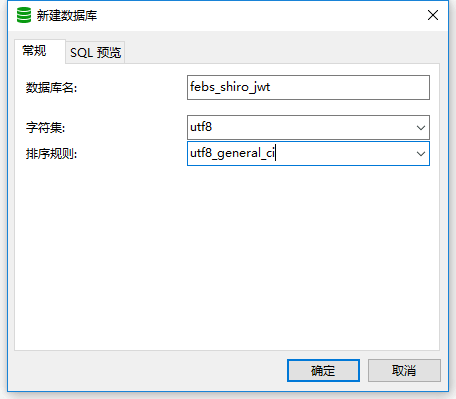
导入SQL：
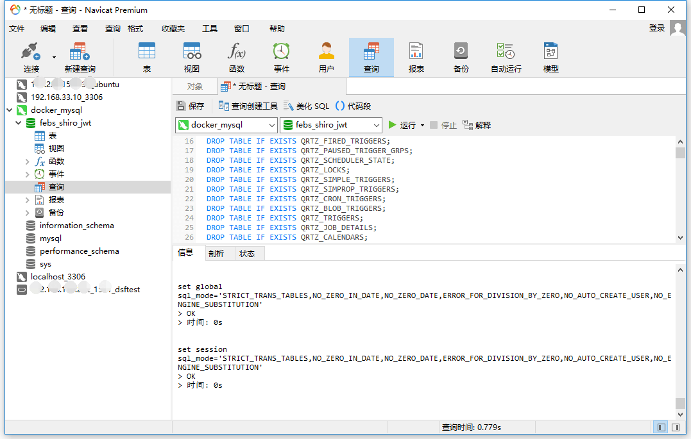
Docker安装Redis
- 拉取Redis镜像:
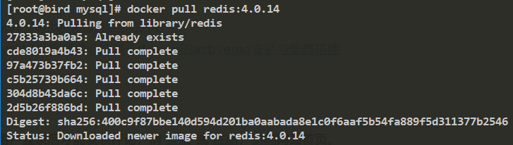
- 创建文件/home/febs/redis/conf/redis.conf，用于挂载Redis配置文件：
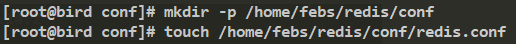
- 创建Redis容器：
1 | docker run -d -p 6379:6379 \ |
测试连接：
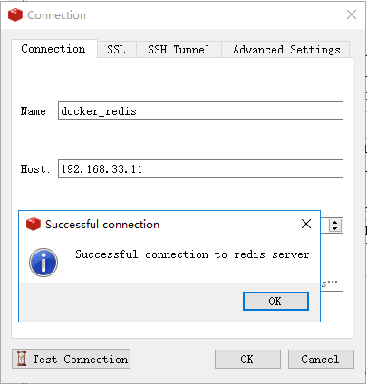
Docker安装Nginx
- 拉取Nginx镜像:
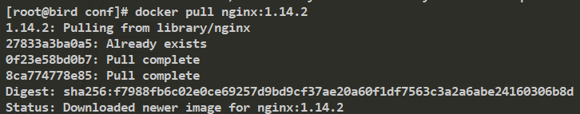
- 创建目录/home/febs/nginx/html、/home/febs/nginx/logs和文件/home/febs/nginx/conf/nginx.conf，分别用于挂载Nginx html,logs和配置文件：
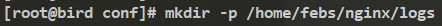 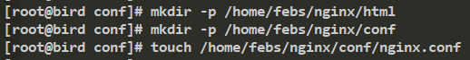
- 修改Nginx配置：
1 | vim /home/febs/nginx/conf/nginx.conf |
1 | worker_processes auto; |
- 创建Nginx容器：
1 | docker run --name nginx -d -p 80:80 \ |
后端部署
修改application.yml中数据库和redis的连接配置，然后将项目打包成jar文件：
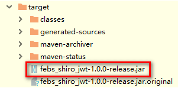
将其上传到CentOS虚拟机的/home/febs/backend目录下：
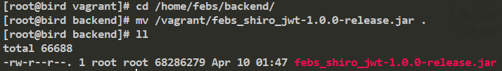
编写一个启动项目的shell脚本：
1 | vim start.sh |
内容：
1 | nohup java -jar febs_shiro_jwt-1.0.0-release.jar & |
编写一个关停项目的shell脚本：
1 | vim stop.sh |
内容：
1 | PID=`ps -ef | grep febs_shiro_jwt-1.0.0-release.jar | grep -v grep | awk '{print $2}'` |
授权，让其可执行：
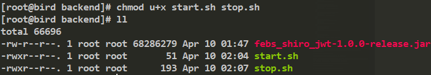
启动项目：
1 | ./start.sh |
看到如下输出的时候说明后端项目启动成功：
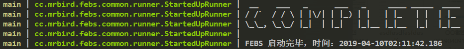
前端部署
点击build：

build成功后，项目目录下会多出个dist文件夹：
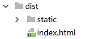
将这个目录下的文件上传到CentOS虚拟机的/home/febs/nginx/html目录下：
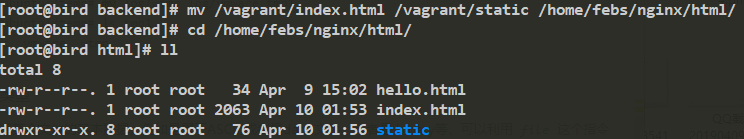
浏览器访问http://192.168.33.11/#/login：
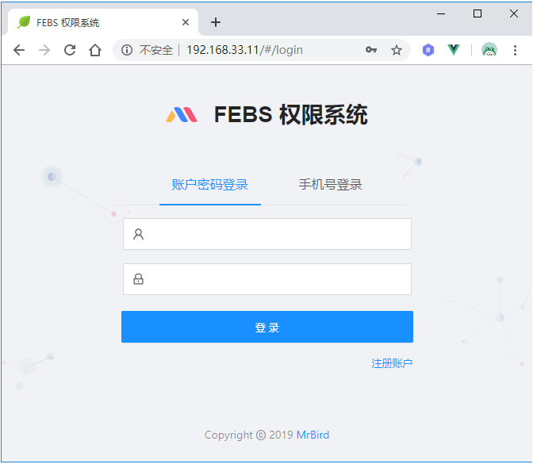
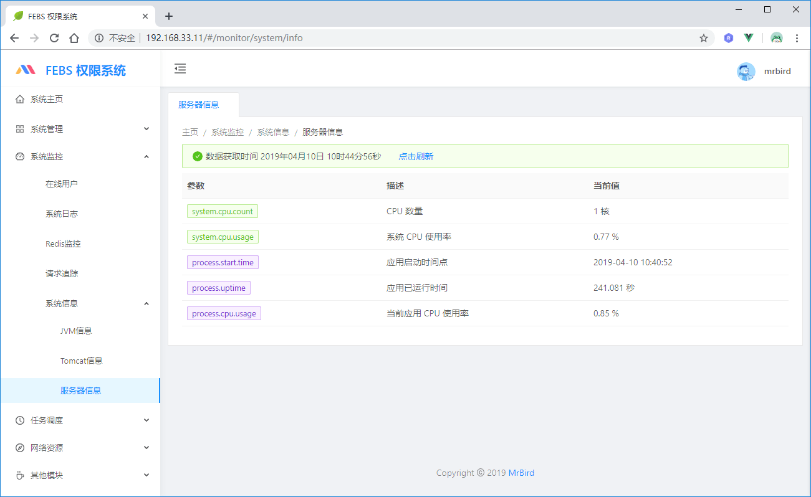
部署成功。
后端项目介绍
项目结构
后端项目目录含义如下图所示：
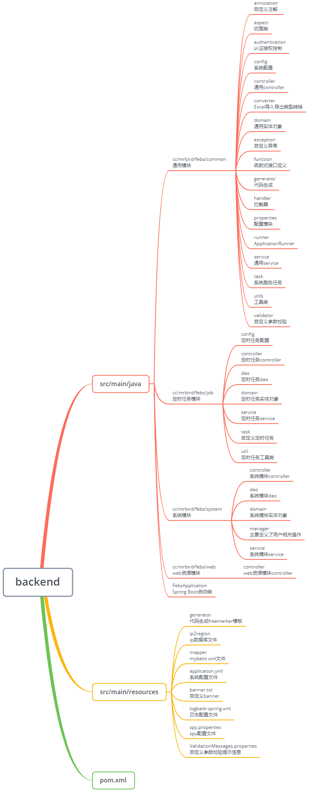
Common模块文件含义如下图所示：
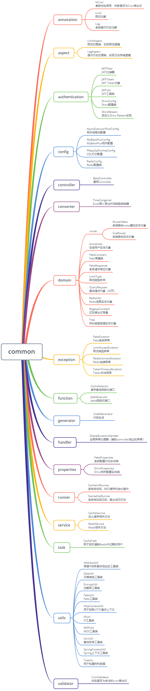
其他模块文件较为简单，略。
项目配置
application.yml中除了各个插件的配置外，下面这段配置为系统配置：
1 | febs: |
febs.opAopLog：Boolean类型，取值true或者false，为true时表示开启Aop记录用户的操作日志，需和@Log注解搭配使用。febs.max.batch.insert.num：大于0的Integer类型，表示Excel导入数据当次最大入库数据量。比如配置为1000时表示入库数据为0 - 1000 时只会执行一次数据库commit操作。febs.shiro.anonUrl：逗号分隔的字符串，表示无需认证的资源路径。febs.shiro.jwtTimeOut：定义token的有效时间，单位为秒，比如配置为3600表示token一个小时内有效，超过一个小时后需要重新认证。
RESTful风格
系统Controller暴露的接口风格为RESTful，通过HTTP请求method对应增删改查类型，响应以HTTP Code为判断依据。
以UserController为例子：
| 描述 | 请求URI | HTTP Method | 对应注解 |
|---|---|---|---|
| 查询所有用户 | /user | GET | @GetMapping |
| 通过用户名查找用户 | /user/{username} | GET | @GetMapping |
| 新增用户 | /user | POST | @PostMapping |
| 修改用户 | /user | PUT | @PutMapping |
| 删除用户 | /user/{userIds} | DELETE | @DeleteMapping |
Controller方法默认返回200状态码，当Controller抛出异常时，将被GlobalExceptionHandler捕获，根据异常类型，返回不同的HTTP状态码：
| 异常类型 | 异常描述 | 状态码 | 对应常量 |
|---|---|---|---|
| UnauthorizedException | 未授权异常，权限不足异常 | 403 | HttpStatus.FORBIDDEN |
| LimitAccessException | 限制访问异常，访问接口频率超限 | 429 | HttpStatus.TOO_MANY_REQUESTS |
| ConstraintViolationException | 参数校验异常（普通传参） | 400 | HttpStatus.BAD_REQUEST |
| BindException | 参数校验异常（实体对象传参） | 400 | HttpStatus.BAD_REQUEST |
| FebsException | Febs系统异常 | 500 | HttpStatus.INTERNAL_SERVER_ERROR |
| Exception | 剩下的别的异常 | 500 | HttpStatus.INTERNAL_SERVER_ERROR |
数据层介绍
首先看看表结构，数据表分为两大类：定时任务表和系统表。
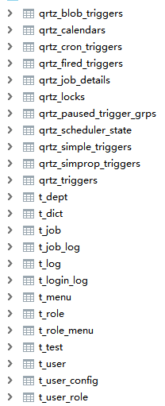
以qrtz_开头的为定时任务表，定时任务有基于内存和基于数据库的，本项目使用的是基于数据库持久化的方案。要详细了解这些表可以参考文章：http://www.ibloger.net/article/2650.html。
以t_开头的为系统表，他们的关系如下所示:
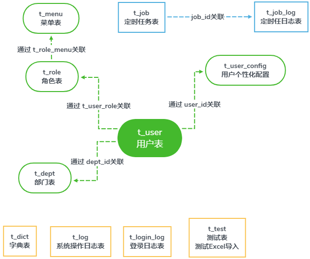
其中用户，角色和权限之间的关系使用的是经典的RBAC（Role-Based Access Control，基于角色的访问控制）模型。简单地说，一个用户拥有若干角色，每一个角色拥有若干权限。这样，就构造成“用户-角色-权限”的授权模型。在这种模型中，用户与角色之间，角色与权限之间，一般者是多对多的关系。如下图所示：
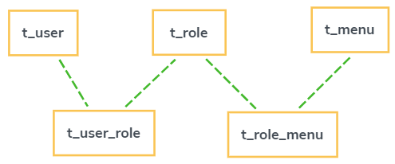
比如获取用户名为mrbrid的用户权限过程为：
通过mrbrid的user_id从t_user_role表获取对应的role_id；
通过第1步获取的role_id从t_role_menu表获取对应的menu_id；
通过第2步获取的menu_id从t_menu获取menu相关信息（t_menu表的permission为权限信息）。
数据层框架采用的是MybatisPlus，具体可以参考其官方文档。
登录逻辑
登录逻辑如下图所示：
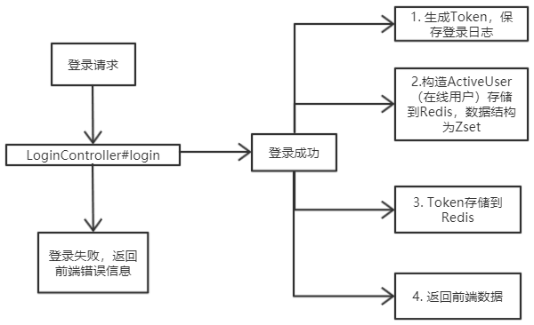
这里详细说明下登录成功后的第2步、第3步和第4步过程：
登录成功后，构建一个ActiveUser对象，对应
LoginController的saveTokenToRedis方法：1
2
3
4
5
6
7
8
9// 构建在线用户
ActiveUser activeUser = new ActiveUser();
activeUser.setUsername(user.getUsername());
activeUser.setIp(ip);
activeUser.setToken(token.getToken());
activeUser.setLoginAddress(AddressUtil.getCityInfo(DbSearcher.BTREE_ALGORITHM, ip));
// zset 存储登录用户，score 为过期时间戳
this.redisService.zadd(FebsConstant.ACTIVE_USERS_ZSET_PREFIX, Double.valueOf(token.getExipreAt()), mapper.writeValueAsString(activeUser));然后将
activeUser通过ObjectMapper序列化，存储到Redis的Zset结构中，key为FebsConstant.ACTIVE_USERS_ZSET_PREFIX（即febs.user.active），score为该用户的登录过期时间点（即Tokean失效时间），value为activeUser序列化值。Zset它在set的基础上增加了一个顺序属性(score)，这一属性在添加修改元素时候可以指定，每次指定后，zset会自动重新按新的值调整顺序。可以理解为有两列字段的数据表，一列存value,一列存顺序编号。
Zset相关Redis命令：
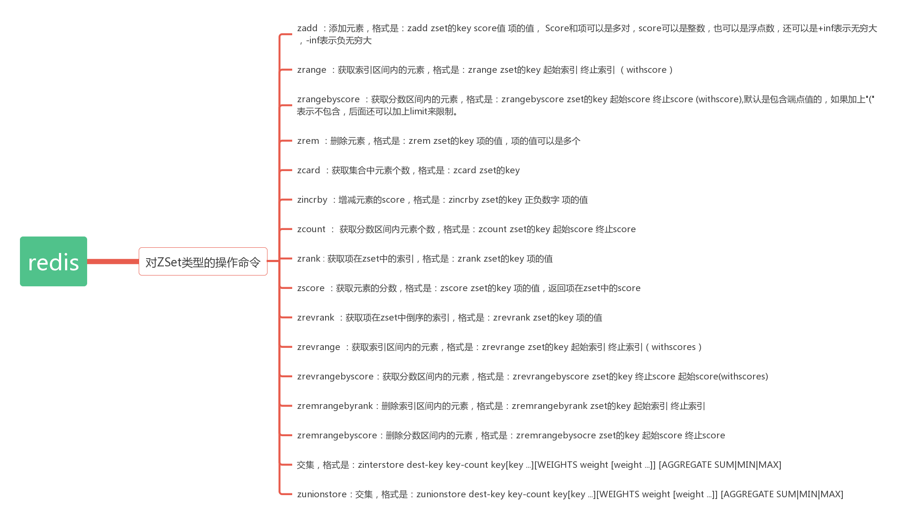
比如当用户mrbird和scott登录成功后，查看Redis中key为febs.user.active的值:
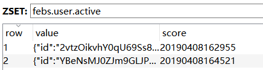
将Token存储到Redis中：key为febs.cache.token.token值.IP地址，value为token值，有效期为token的有效时长，对应的源码为：
1
this.redisService.set(FebsConstant.TOKEN_CACHE_PREFIX + token.getToken() + StringPool.DOT + ip, token.getToken(), properties.getShiro().getJwtTimeOut() * 1000);
返回前端数据包括:
1.token：token；
2.exipreTime：token过期时间；
3.roles：用户角色；
4.permissions：用户权限；
5.config：用户前端系统的个性化配置；
6.user：用户信息（不包括密码）。
比如，当scott登录成功后，接口返回数据如下所示：
1
2
3
4
5
6
7
8
9
10
11
12
13
14
15
16
17
18
19
20
21
22
23
24
25
26
27
28
29
30
31
32
33
34
35
36
37
38
39
40
41
42
43
44
45
46
47
48
49
50
51
52
53
54
55
56
57
58
59
60
61
62
63
64
65
66
67
68
69
70
71
72{
"data": {
"permissions": [
"user:view",
"dept:add",
"job:export",
"role:add",
"weather:view",
"dict:add",
"role:export",
"menu:export",
"dict:view",
"dept:export",
"menu:view",
"role:view",
"user:export",
"job:add",
"dept:view",
"article:view",
"log:view",
"jobLog:view",
"job:view",
"menu:add",
"redis:view",
"log:export",
"movie:coming",
"movie:hot",
"dict:export",
"jobLog:export",
"user:online"
],
"roles": [
"注册用户"
],
"exipreTime": "20190408164521",
"config": {
"userId": 2,
"theme": "light",
"layout": "side",
"multiPage": "0",
"fixSiderbar": "1",
"fixHeader": "1",
"color": "rgb(24, 144, 255)"
},
"user": {
"userId": 2,
"username": "scott",
"password": "it's a secret",
"deptId": 6,
"deptName": null,
"email": "scott@qq.com",
"mobile": "15134627380",
"status": "1",
"createTime": "2017-12-30 00:16:39",
"modifyTime": "2019-01-18 08:59:09",
"lastLoginTime": "2019-01-23 15:34:28",
"ssex": "0",
"description": "我是scott，嗯嗯",
"avatar": "gaOngJwsRYRaVAuXXcmB.png",
"roleId": null,
"roleName": null,
"sortField": null,
"sortOrder": null,
"createTimeFrom": null,
"createTimeTo": null,
"id": "YBeNsMJ0ZJm9GLJP1rlO",
"authCacheKey": 2
},
"token": "b25e39b47e774b4a05b3cb1555fc377f209457c3fd339d373d3fca7b1ea8be56fdc6ed05b7ffb0700e7300d242fb83b57b35f45ee1b155b380 50a0671bc7ec54c2f2c5bb1aee0651db69ce657e8ab4cb79c7806209103eda8a3bc96aa043a0144ae3c06a5c549ac168183c37384cf4347e450bf11644d0 62c31ffc3059e63722f849a5de4540b0d1"
},
"message": "认证成功"
}
Redis缓存使用
在系统启动过程中，会执行缓存初始化操作，对应CacheInitRunner：
1 | 4j |
loadUserRedisCache方法源码：
1 | /** |
可以看到，这一过程缓存了用户信息，用户角色信息，用户权限信息，用户的个性化配置信息，缓存的具体key，value可以查看上述方法的源码。通过这些缓存，可以一定程度减轻数据库压力。
为了确保缓存数据和数据库数据的一致性，我们必须在相应的增删改方法中对缓存进行相应的操作。比如在更新用户后，我们必须更新相应的缓存：
1 |
|
总而言之，由于我们在启动系统的时候缓存了用户信息，用户角色信息，用户权限信息，用户的个性化配置信息，之后凡是涉及到用户，用户角色，用户权限和用户个性化配置的相关增删改操作都应该及时更新相应的缓存。
动态路由构建
不同的用户拥有不同的角色，不同的角色对应不同的菜单权限，所以我们需要通过用户查询出对应的菜单列表，然后将列表构建成前端需要的路由（前端根据路由信息构建相应的菜单）。
获取用户路由的方法为UserManage#getUserRouters：
1 | /** |
比如用户mrbird对应的前端路由为：
1 | [ |
关于Vue Router可以参考：https://router.vuejs.org/zh/。
权限控制
我们可以在Controller的方法上通过Shiro相关的权限注解进行权限控制，比如下面这个方法只有当用户拥有user:add权限才能访问：
1 | ("/user") |
当用户没有user:add权限时，系统将抛出UnauthorizedException异常，由GlobalExceptionHandler捕获，返回403状态码。
更多Shiro提供的权限注解可以参考：
1 | // 表示当前Subject已经通过login进行了身份验证；即Subject.isAuthenticated()返回true。 |
多数据源
多数据源采用的是MyBatis Plus提供的方案：https://mp.baomidou.com/guide/dynamic-datasource.html
代码生成
目前只有后端代码生成器，采用的是MyBatis Plus提供的方案，对应源码cc.mrbird.febs.common.generator.CodeGenerator，执行其main方法，然后输入表名，就可以生成相应的domain、dao、service、controller、mapper.xml。
Excel导入导出
Excel导入导出使用的插件为：https://gitee.com/wuwenze/ExcelKit，具体操作规则可以仔细阅读这个项目的Readme.md
统一参数校验
统一参数校验可以参考我的博客：Spring Boot配合Hibernate Validator参数校验。
SQL打印
SQL打印采用的插件为p6spy，要开启p6spy的SQL打印功能，只需将配置文件application.yml中的spring.datasource.dynamic.p6spy改为true即可。
在p6spy.properties文件中可以配置打印规则：
1 | # 使用日志系统记录 sql |
SQL打印效果如下所示：
1 | 2019-04-08 15:29:50 | INFO | http-nio-9527-exec-1 | p6spy | 2019-04-08 15:29:50 | 耗时 73 ms | SQL 语句： |
开启这个功能方便我们开发调试，生产环境最好关闭这个功能，因为它在一定程度上会造成性能耗损。
更多p6psy的配置可以参考：https://p6spy.readthedocs.io/en/latest/configandusage.html
AOP记录操作日志
具体可以参考我的博客：Spring Boot AOP记录用户操作日志。
记录操作日志的过程可以改为异步的方式，这样不会造成接口性能损耗，可以参考我的博客：Spring Boot 中的异步调用。
接口限流
项目中@Limit注解可以实现接口的限流。即规定一段时间内最多可以访问该接口的次数，超过这个次数则抛出LimitAccessException异常。@Limit注解如下所示：
1 | import cc.mrbird.common.domain.LimitType; |
其中，limitType包含传统类型限流和根据IP限流，其为枚举类型：
1 | public enum LimitType { |
下面举个使用示例：
1 | import cc.mrbird.common.annotation.Limit; |
上面配置表示使用传统限流的方式，testLimiter方法在600秒内最多只能访问10次。当600秒内第11次访问该接口时，接口将抛出LimitAccessException异常。
Shiro教程
Shiro如何整合JWT
Shiro如何整合JWT可以参考：https://gitlab.com/wuyouzhuguli/shiro_jwt
为了简化过程，例子没有使用数据库和Redis，在内存中模拟了两个用户：
1 | /** |
可以使用PostMan进行接口测试。
前端项目介绍
项目结构
项目机构如下图所示：
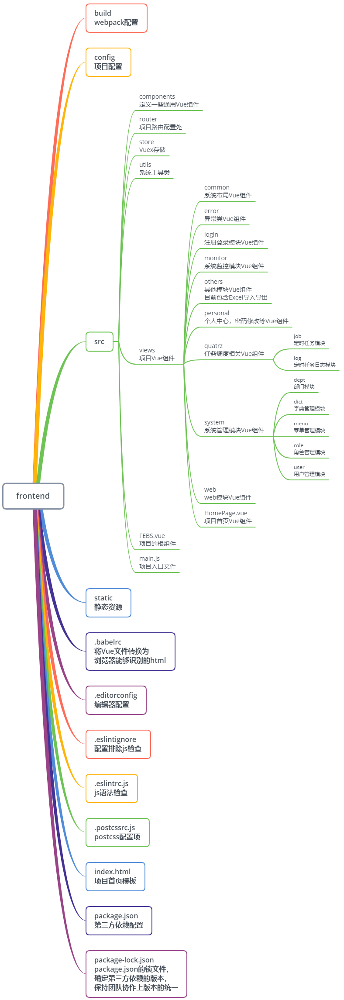
数据存储
在用户登录成功后，项目会通过Vuex和localstorage存储一些数据供项目全局使用。
正如前面所说，当用户登录成功后，后端会返回如下数据：
token：token；
exipreTime：token过期时间；
roles：用户角色；
permissions：用户权限；
config：用户前端系统的个性化配置；
user：用户信息（不包括密码）。
在src/views/login/Login.vue文件中你会看到如下代码：
1 | ...mapMutations({ |
这将把登录接口返回的数据存储到Vuex和浏览器的localstorage中。
存储Token的原因是，后续需要认证的请求，都会在请求头中携带这个Token；存储ExpireTime的原因是为了优化认证过期时的用户体验；存储用户信息的原因是为了供个人中心和系统主页使用；存储角色和权限是为了判断页面按钮渲染与否；存储用户个性化配置的原因是为了通过这些配置渲染不同的系统界面。
路由导航守卫
路由导航守卫代码位置：frontend/src/router/index.js：
1 | ... |
主要逻辑分为下面几步：
判断要跳转的路由地址是否在路由白名单内，是的话放行，不是的话进行第2步；
从内存中获取token和用户信息，如果存在则进行第3步，不存在跳转到登录页；
判断动态路由信息是否存在，存在则放行，不存在则进行第4步；
判断用户路由是否已经加载，是的话将用户路由赋值给动态路由，并执行路由添加操作，然后跳转；如果用户路由不存在，则执行第5步；
根据用户名从后台获取用户路由信息，并将其保存到内存中，再执行路由添加操作，然后跳转。
权限控制
在前端页面中，我们已经实现了通过不同用户获取不同的路由，以此渲染出不同的菜单列表功能，此外页面上的操作按钮也必须进行权限控制。
正如前面所述，在登录成功后，系统会把用户的角色和权限信息存储到了内存中，所以我们可以通过这些信息结合 自定义Vue指令 的方式来实现按钮的权限控制。
目前支持的和权限相关的Vue指令有：
| 指令 | 含义 | 示例 |
|---|---|---|
| v-hasPermission | 当用户拥有列出的权限的时候，渲染该元素 | <template v-hasPermission="'user:add','user:update'"><span>hello</span></template> |
| v-hasAnyPermission | 当用户拥有列出的任意一项权限的时候，渲染该元素 | <template v-hasAnyPermission="'user:add','user:update'"><span>hello</span></template> |
| v-hasRole | 当用户拥有列出的角色的时候，渲染该元素 | <template v-hasRole="'admin','register'"><span>hello</span></template> |
| v-hasAnyRole | 当用户拥有列出的任意一个角色的时候，渲染该元素 | <template v-hasAnyRole="'admin','register'"><span>hello</span></template> |
| hasNoPermission | 当用户没有列出的权限的时候，渲染该元素 | <template v-hasNoPermission="'user:add','register'"><span>无操作权限</span></template> |
以v-hasPermission="user:add"为例，详细介绍下自定义权限Vue指令的实现过程：
在src/utils/permissionDirect.js中定义如下代码：
1
2
3
4
5
6
7
8
9
10
11
12
13
14
15
16
17
18
19
20
21
22
23export const hasPermission = {
install (Vue) {
Vue.directive('hasPermission', {
bind (el, binding, vnode) {
let permissions = vnode.context.$store.state.account.permissions
let value = binding.value.split(',')
let flag = true
for (let v of value) {
if (!permissions.includes(v)) {
flag = false
}
}
if (!flag) {
if (!el.parentNode) {
el.style.display = 'none'
} else {
el.parentNode.removeChild(el)
}
}
}
})
}
}上面代码中，我们从Vuex中获取了用户所拥有的权限，然后判断这些权限中是否包含
user:add，如果不包含，则将对应的元素（el）移除或者隐藏。所以当用户没有user:add权限时，下面的按钮将不会被渲染在页面上：1
<template v-hasPermission="'user:add'"><button>新增用户</button></template>
要让自定义Vue指令生效，还需要在src/utils/install.js中将其添加到Plugins列表。
Axios封装
项目使用Axios插件来发送HTTP请求，并对它进行了封装（frontend/src/utils/request.js），这里主要讲述下request.js中主要逻辑。
1 | // 统一配置 |
上面这段代码对请求进行了统一配置，baseURL定义了后端地址的基础路径，responseType定义了响应数据类型为JSON，只有状态码为200时才认定请求成功。
1 | // 拦截请求 |
在Axios的前置拦截中，我们首先判断了token是否已经过期，如果过期了则清空在登录时保存的数据，并且刷新页面。这时候通过路由导航守卫，页面会被重定向到登录页面，引导用户重新登录。
如果token没有过期，则在请求头上带上token信息。headers.Authentication和后端代码中的TOKEN名称相对应：
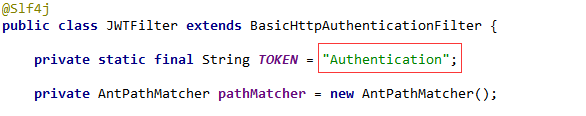
1 | // 拦截响应 |
上面代码中我们实现了异常响应的统一处理，根据不同的状态码给予不同的提示信息。
此外，项目还对各种HTTP请求进行了封装，下面一一列举出它们的用法：
GET请求
方式一：
1 | this.$get('user', { |
因为我们在前面已经定义了后端地址的基础路径，所以上面这个请求的实际地址为：http://127.0.0.1:9527/user。
在前面我们已经对异常响应进行统一处理，当然你也可以通过catch来覆盖：
1 | this.$get('user', { |
方式二（路径传参）：
1 | this.$get(`menu/${user.username}`).then((r) => { |
方式三：
1 | this.$get(`user?username=${user.username}`).then((r) => { |
POST请求
1 | this.$post('user', { |
PUT请求
1 | this.$put('user', { |
DELETE请求
1 | this.$delete('user/${user.userId}').then((r) => { |
下载文件
1 | this.$download('file', { ...params }, 'xxx.xx') |
xxx.xx为下载的文件名，比如下载xlsx文件的话为 Excel文件.xlsx，后端接口返回数据流即可。
上传文件
1 | let formData = new FormData($("#form")[0]); |
后端以MultipartFile接收文件即可。
路径配置
在build/webpack.base.conf.js中，我们定义了一些路径变量：
1 | module.exports = { |
比如~代表src/components路径，在项目中，如果要引入src/components/test.vue只需要这样做即可：
1 | import ~/test.vue |
当然，你也可以使用相对路径和绝对路径，而不使用这些变量。
第三方组件介绍
Ant Design Vue已经提供了非常丰富的组件，除此之外，项目里使用的图表插件为：apexcharts.js，其官方文档提供了很多示例，这里就不赘述了。
开发建议
相信正在阅读文档的你十有八九是一名后端开发者，可能对前端特别是对Vue不太熟悉，这里给出几点改造frontend的建议：
要有一定的ES6语法基础，可以参考 ES6学习笔记 ，如果要系统学习ES6，推荐阮一峰的： ECMAScript 6 入门 。
Vue的官方文档还是挺详细的，建议仔细阅读，我在学习Vue的时候也做了一些笔记，可以参考：https://mrbird.cc/Vue-Learn-Note.html。Vue的学习路线：Vue基础语法 -> Vuex -> Vue Router。
前端组件用的是Ant Design Vue，所以在使用它提供的组件的时候，多阅读它的使用文档。
开发示例
新建一个页面
在frontend工程的src/views下新建一个test目录，在该目录下新建一个test.vue文件： 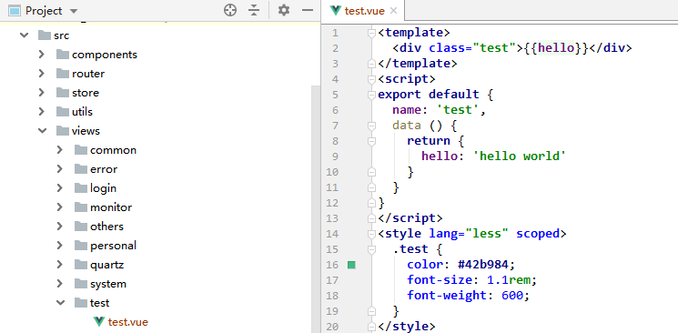
内容如下所示：
1 | <template> |
启动项目，使用管理员账号登录，然后在菜单管理中新建一个菜单：
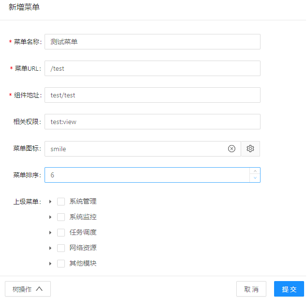
菜单URL：这里填写/test的话，在访问这个页面的时候，浏览器地址栏为http://localhost:8081/#/test，只要确保这个值不重复即可；
组件地址：对应要渲染的Vue组件地址，在路由导航守卫中有如下一段代码：
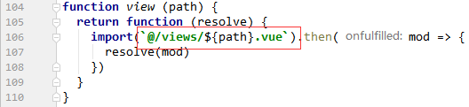
所以这里填test/test，对应
@/views/test/test.vue组件。相关权限：访问这个页面需要
test:view权限。
点击确定后，这个菜单就被建好了：
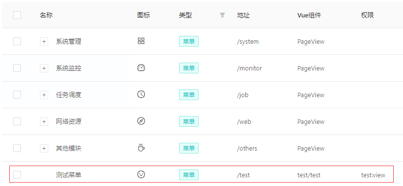
接着修改管理员角色，将刚刚新建的菜单授权给管理员：
点击确定修改后，重新登录系统：
如何新建一个多级菜单
在新增多级菜单前，先了解下系统中的一个约定：在一个多级菜单中，顶级菜单对应的组件为PageView，末级菜单对应的组件为需要渲染的页面组件，剩下的（非顶级，非末级的中间菜单对应的组件为EmptyPageView）。
我们来建一个四级菜单，首先新增一个顶级菜单：
因为是顶级菜单，所以对应组件填PageView。
接着新增第二级菜单：
因为它数据中间菜单（非顶级非末级）所以对应组件填EmptyPageView，上级菜单勾选刚刚新建的一级菜单。
继续新增三级菜单：
因为它也是一个中间菜单，所以对应组件填EmptyPageView，上级菜单勾选刚刚新建的二级菜单。
最后将我们前面建好的测试页面作为末级，点击测试页面后面的小齿轮按钮，进行修改：
点击确定后一个四级菜单就建好了：
最后一步授权！修改管理员角色：

修改后，重新登录系统：
因为我没有设置排序，所以默认排在最前面了。
如何隐藏路由
有的时候，一些路由并不需要渲染成菜单，比如个人中心这类页面。而这些页面一般都是所有用户共有的，所以在后台系统里构建路由的时候写死即可。要隐藏路由只需要将路由meta的isShow属性设置为false即可：
参考后台代码cc.mrbird.febs.common.utils.TreeUtil：
如何分配权限
权限是和角色绑定的，所以要分配权限实际就是对角色的增删改。假如现在要配置一个角色 ——— 系统监控管理员，负责系统监控模块的查看：
然后新增一个用户 ——— yuuki，角色为系统监控管理员：
新建好后，使用yuuki的账号登录：
可以看到，yuuki只有系统监控模块的权限。
前端如何添加依赖
在https://www.npmjs.com/搜索需要安装的依赖，比如jQuery：
比如我需要安装jQuery 3.3.1版本，只需要在终端输入如下命令即可：
安装好后，在package.json的依赖列表里会多出一个jquery 3.3.1：
如何处理排序
对于前端来说，需要上送两个参数：
sortField：需要排序的字段；
sortOrder：排序规则，ascend或者descend。
对于后端来说，排序主要分为四种情况：
- 结果需要分页的，并且是通过xml定义的SQL查询出来的结果：
1 | SortUtil.handlePageSort(request, page, "userId", FebsConstant.ORDER_ASC, false); |
userId和FebsConstant.ORDER_ASC指定了默认的排序规则，即默认按照userId字段升序排序。最后一个参数表示是否需要开启驼峰转下划线，这种情况下不需要，false即可。
具体可以参考cc.mrbird.febs.system.service.impl.UserServiceImpl#findUserDetail。
如果不需要指定默认排序规则，使用handlePageSort的重载方法即可：
1 | SortUtil.handlePageSort(request, page, false); |
- 结果需要分页的，并且是通过Mybatis Plus插件查询出来的结果：
1 | SortUtil.handlePageSort(request, page, true); |
这种情况下，最后一个参数值必须为true。
具体可以参考cc.mrbird.febs.system.service.impl.DictServiceImpl#findDicts。
1和2主要区别就是是否需要开启驼峰转下划线。
- 结果不需要分页，并且是通过xml定义的SQL查询出来的结果：
1 | SortUtil.handleWrapperSort(request, queryWrapper, "orderNum", FebsConstant.ORDER_ASC, false); |
具体可以参考：cc.mrbird.febs.system.service.impl.DeptServiceImpl#findDepts
- 结果不需要分页，并且是通过Mybatis Plus插件查询出来的结果：
1 | SortUtil.handleWrapperSort(request, queryWrapper, "orderNum", FebsConstant.ORDER_ASC, true); |
总之，对于处理排序的方法，第一个参数一定是cc.mrbird.febs.common.domain.QueryRequest。第二个参数如果需要分页，则传递com.baomidou.mybatisplus.extension.plugins.pagination.Page，不需要分页则传递com.baomidou.mybatisplus.core.conditions.query.QueryWrapper。最后一个参数如果查询结果是Mybatis Plus查询出来的结果，则需设置为true，否则为false。
后端接口测试
由于后端接口为RESTful接口，所以不能使用浏览器来测试，可以使用PostMan或者Chrome插件RestLet来测试后端接口。文档以PostMan为例。
因为后台接口大部分都需要用户认证后才能访问，所以在测试之前需要通过登录接口获取一个可用的token。
成功获取到了token。
测试获取mrbird的前端路由信息：
在Headers设置一个键值对，key为Authentication，value为刚刚获取到的token，发送请求便可以获取到mrbird的路由信息。其他接口测试以此类推。
如果token填错或者不填：
后端将返回401。
常见问题
导入项目编译出错，代码是否不全？
编辑器安装lombok插件即可。
导入SQL为何出错？
MySQL数据库请使用5.7.x版本，不同版本SQL语法有差异。如果你SQL技术过硬可以通过错误信息去修改出错的SQL，更推荐的做法是安装推荐版本的MySQL数据库。
ip2region是啥玩意，打开怎么乱码？
通过ip获取地址的开源软件数据库文件，不要直接打开。ip2region地址：https://github.com/lionsoul2014/ip2region。
项目缺陷
前端页面不支持移动端（不能自适应）；
前端打包后vendor.js较大，通过nginx压缩后在591kb左右，在我的渣渣服务器（1核1G1M）下，访问时间大约为7 - 8秒左右：
如果你的服务器带宽够大，或者是部署在公司局域网内的话，这个问题可以忽略。如果要在根源上解决这个问题个人觉得可以从这几个地方入手：
Ant Design采用SVG格式的图标后，导致项目打包体积过大，可以参考官方issue的讨论：https://github.com/vueComponent/ant-design-vue/issues/325和https://github.com/ant-design/ant-design/issues/12011；
可以将依赖通过CDN来加载，参考连接：https://blog.csdn.net/qq_35844177/article/details/78599064；
webpack打包配置可能存在可优化的地方。
由于我才疏学浅，前端技能薄弱，所以没能够很好地解决这个问题。欢迎来自五湖四海的能人志士pull request来改善这个问题，感激不尽。